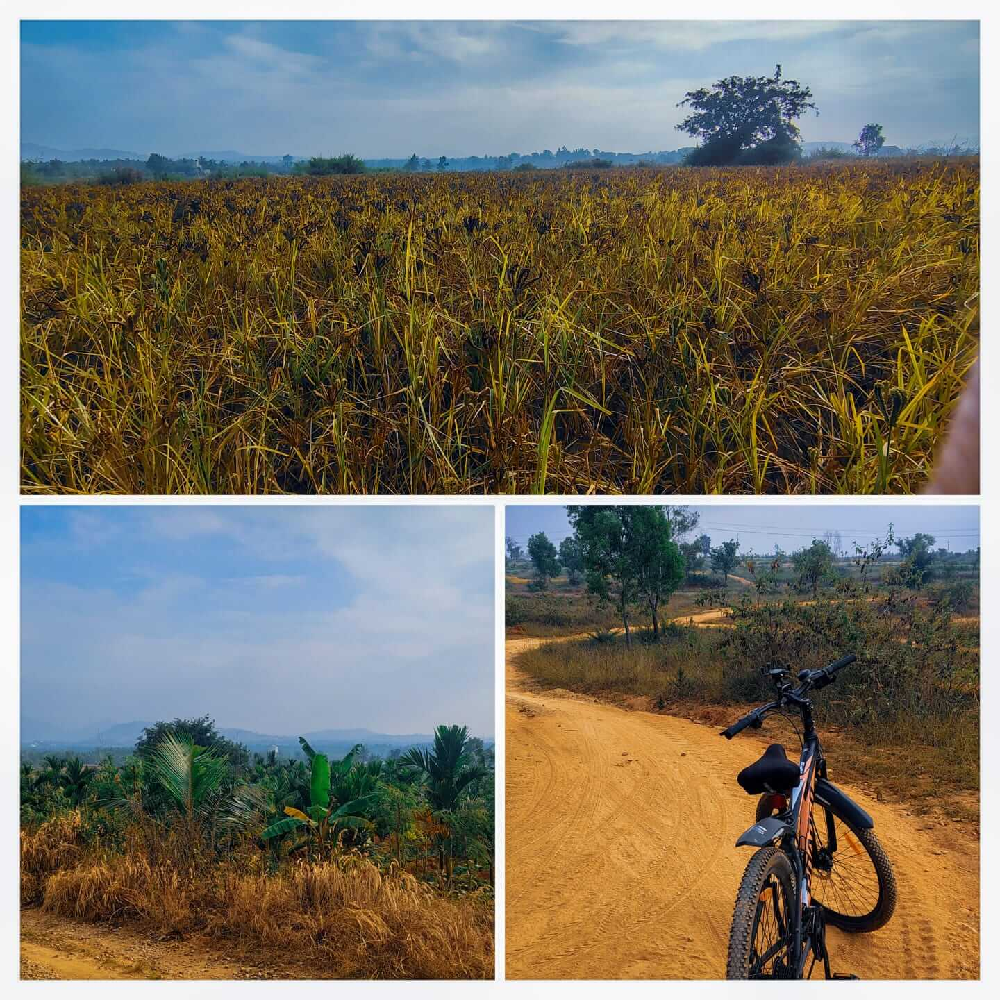
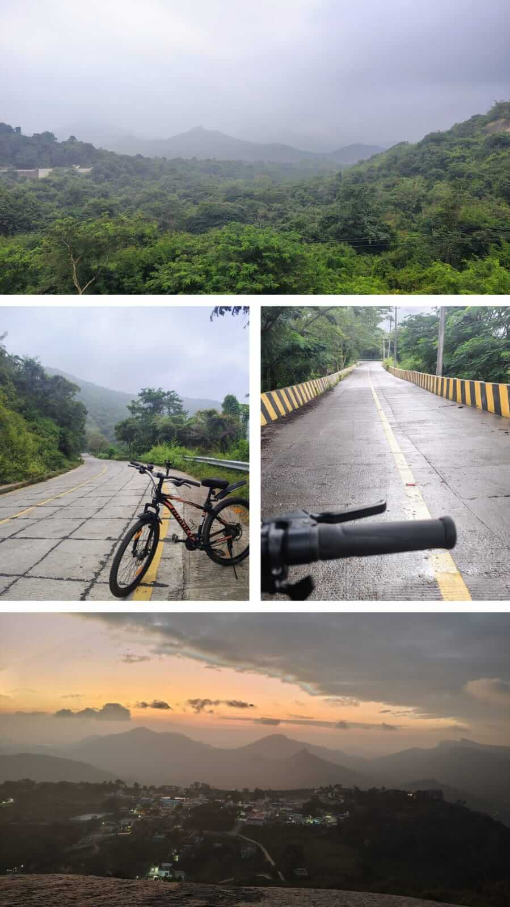

Top 5 Cycling Places in Tumkur (With Distance, Time & Route Experience)
Published: December 2025 | Reading time: 6 minutes
1. Shettihalli Hanuman Temple -> Plasandra
- 📍 Distance: Around 14–16 km
- ⏱️ Time: 1.5 - 2 Hours
- 💪 Difficulty: Medium
- 🛣️ Road Type: Village Roads
This route takes you through the heart of rural Tumkur. It’s green, free of heavy traffic, and connects towards Gulur Kere if you want a longer loop.
The Experience: Great for exploration and group cycling. The village roads are generally quiet, allowing you to chat with friends as you ride. There are multiple route options here, making every ride feel a bit different.
2. Bamboo Forest Route

- 📍 Distance: Around 12–14 km from Tumkur
- ⏱️ Time: 1.5 Hours
- 💪 Difficulty: Medium
- 🛣️ Road Type: Mixed (Tar + Mud)
If you love nature and silence, this is your spot. As the name suggests, the route is flanked by dense bamboo clusters. It feels raw and untouched.
The Experience: This is half off-road cycling. The paths can be muddy, so an MTB or a Hybrid cycle is best here. It’s incredibly peaceful—green canopy overhead, cool breeze, and scenic views. Perfect for a stress-busting morning ride.
3. Bully Lake (Near DD)

- 📍 Distance: Around 18 km from Tumkur
- ⏱️ Time: 2.5 Hours
- 💪 Difficulty: Hard (The return climb is brutal)
- 🛣️ Road Type: Good Road
This route is famous for its long, sweeping downhill stretch towards the lake. You can glide for kilometers without pedaling, feeling like you're on a superbike.
The Experience: While the way down is amazing, remember: what goes down must come up. The return journey uphill requires serious stamina. Ensure your brakes and tyre grip are in top condition for the descent. Recommended for experienced riders.
4. Gulur Kere

- 📍 Distance: Around 10 km from Tumkur
- ⏱️ Time: 1 Hour
- 💪 Difficulty: Easy / Relaxed
- 🛣️ Road Type: Mix of Road & Off-road paths
Looking for a chill ride? Head to Gulur. The beautiful village atmosphere and the famous Gulur Ganapathi Temple nearby make it a culturally rich ride.
The Experience: There’s a dedicated path near the lake edge used by walkers and cyclists. It’s very safe and away from highway traffic. In the rainy season, the water views are stunning, and you might spot locals fishing. A very calming and relaxing ride.
5. Devarayanadurga (DD Hills)
- 📍 Distance: Around 15 km from Tumkur (one way)
- ⏱️ Time: 2 - 2.5 Hours (Round trip)
- 💪 Difficulty: Hard (Steep uphill)
- 🛣️ Road Type: Tarmac (Good Road)
The classic. The legend. DD Hills is the ultimate test for any Tumkur cyclist. The climb starts tough with winding roads and keeps getting steeper. You will struggle, you might gasp for breath, but the view from the top is worth every pedal stroke.
The Experience: The uphill is a challenge, but the downhill return? Pure joy. It’s fast, thrilling, and feels like flying. Watch out for monkeys and the occasional deer near the forest check post. It truly gives you a hill station feeling right here at home.
✨ BONUS: Mydala Kere

Located near the Peacock Hill side, this is a massive lake with a peaceful sitting spot. It's hands-down the best spot to visit during the rainy season when the water level is high. Note that it can get a bit crowded on weekends, but the vibe is unmatched.
Safety & Gear Essentials
Before you head out, make sure you have the basics:
- Helmet: Non-negotiable. Always protect your head.
- Lights: Essential for early morning or evening rides.
- Good Brakes: Crucial for downhill spots like DD Hills and Bully Lake.
- Tyre Grip: Wet roads and mud require tyres with decent tread.
- Hydration: Carry a water bottle, it gets sunny quickly.
- Puncture Kit: Don't get stranded far from home.
Ready for your next adventure?
Make sure your cycle is in top shape before tackling these hills. Need a quick tune-up, new tyres, or better brakes?